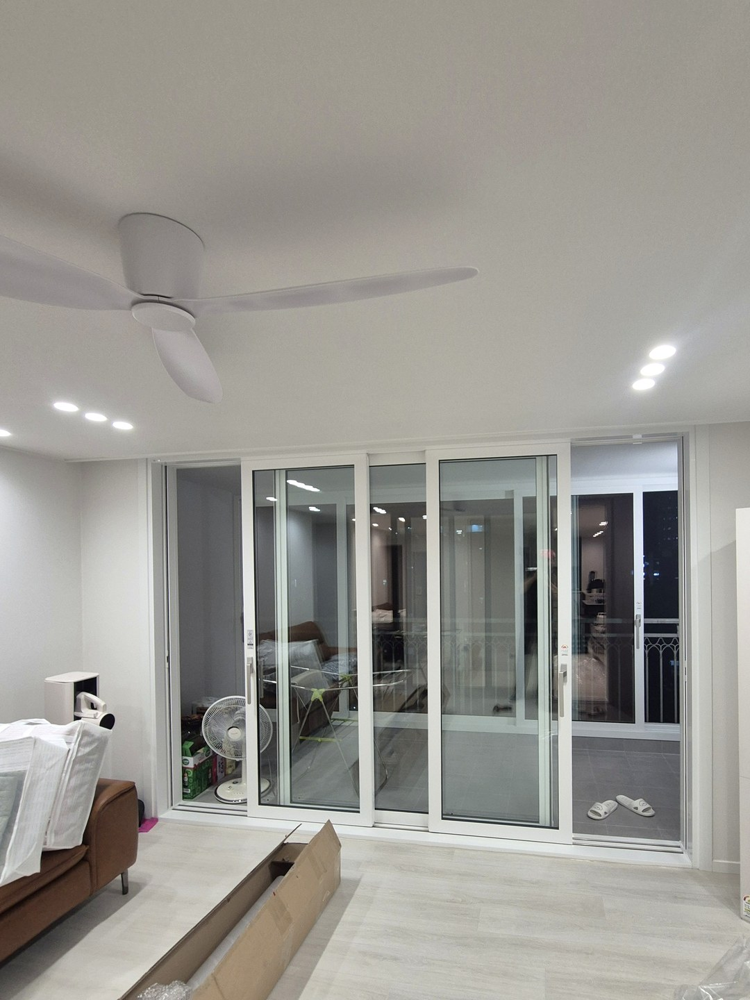
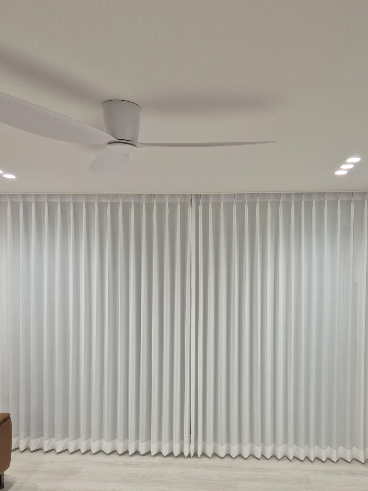
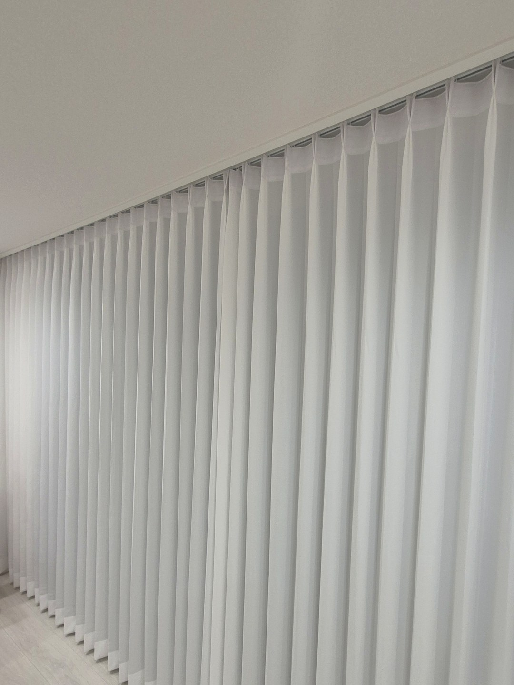
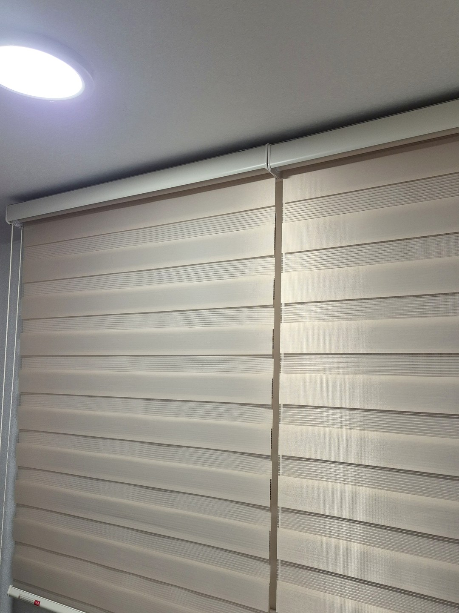
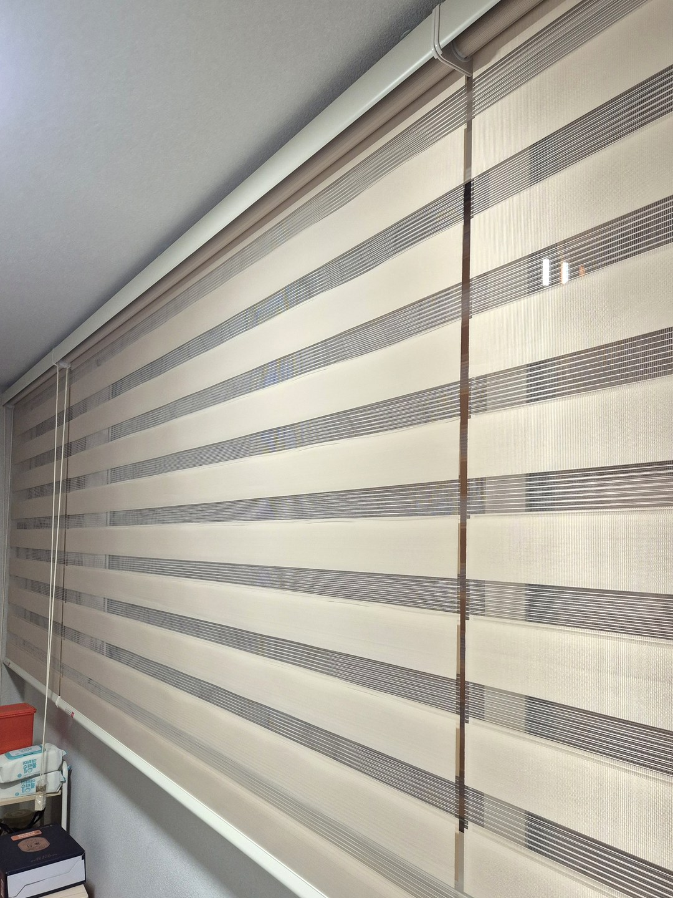
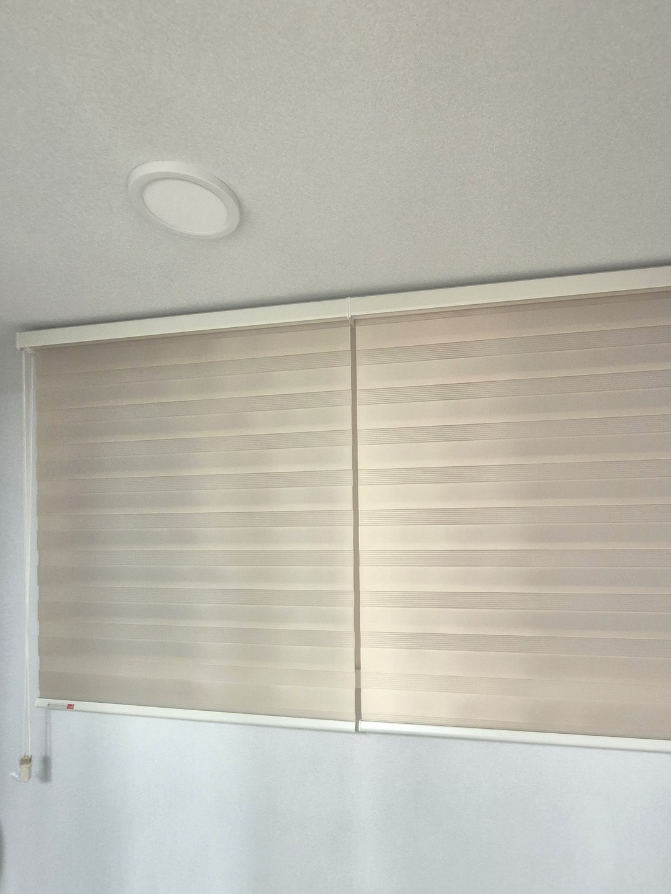

2026년 9월 18일 시공
포항 우현동 아파트
거실 커튼 · 전 창 콤비블라인드 시공후기

포항 우현동의 한 아파트에서 진행한 시공입니다.
이 집은 창이 여러 개인데 창마다 제품을 다르게 넣었습니다.
거실에는 커튼을, 안방과 작은방과 주방과 베란다에는 콤비블라인드를 설치했습니다.
인테리어 담당 사장님께서 저희를 소개해 주셔서 연결된 현장입니다.
창을 고를 때 저희가 보는 세 가지
어느 제품이 좋다기보다, 그 창을 어떻게 쓰는 창인지가 먼저입니다.
① 그 앞으로 사람이 자주 지나다니는가
② 물기나 먼지가 닿는 자리인가
③ 그 창이 방 분위기를 결정할 만큼 큰가
세 가지 중 ①②에 해당하면 블라인드 쪽이, ③에 해당하면 커튼 쪽이 대체로 맞습니다.
거실 — 크고, 지나다니지 않는 창

이 거실은 베란다 유리문이 한쪽 벽면을 거의 다 차지합니다.
이만한 면적은 무엇을 달아도 가구보다 먼저 눈에 들어옵니다.
평평한 면보다 세로 결이 있는 쪽이 공간을 덜 답답하게 만들어 커튼으로 잡았습니다.

원단은 헤비쉬폰, 주름은 두배나비주름
헤비쉬폰은 비치는 쉬폰 계열이면서 일반 쉬폰보다 두께와 무게가 있는 원단입니다.
가벼운 원단은 창이 커지면 아랫단이 들뜨면서 선이 흔들립니다.
무게가 실려야 바닥 가까이까지 곧게 내려옵니다.
주름은 창 폭의 두 배 분량을 넣는 두배주름으로 잡아 골을 깊게 만들었습니다.

여기에 형상기억 가공을 더했습니다.
주름을 잡아 둔 상태로 열처리해 원단이 그 형태를 유지하도록 만드는 공정입니다.
여닫기를 반복해도 골이 제자리를 찾아가기 때문에 넓은 창일수록 차이가 오래갑니다.
베란다 — 드나들고, 물기가 있는 창
베란다는 세탁기와 건조대가 놓이는 작업 공간입니다.
바닥까지 떨어지는 천은 오갈 때 발에 밟히고 물이 튀면 얼룩이 남습니다.
콤비블라인드는 창틀 범위 안에서 위아래로만 움직여 통로를 막지 않습니다.


두 사진은 같은 블라인드입니다.
원단 두 겹의 위치를 포개느냐 어긋내느냐에 따라 이렇게 달라집니다.
어긋냈을 때 가로로 드러나는 띠가 비치는 부분이고, 촬영 시각이 저녁이라 그 너머가 어둡게 찍혔습니다.
낮에는 이 폭을 조절해서 들어오는 빛의 양과 바깥 시선을 동시에 정리하게 됩니다.
색은 베이지로 통일

흰 계열은 밝지만 해가 강한 시간에 반사가 세게 옵니다.
짙은 계열은 차분한 대신 낮에도 실내가 가라앉아 보입니다.
베이지는 빛을 한 번 걸러 주면서 거실 커튼의 아이보리와도 계열이 이어집니다.
창마다 제품이 달라도 색 계열을 묶어 두면 집 전체가 따로 놀지 않습니다.
미리 알려 드리는 것
콤비블라인드는 줄을 포개 닫아도 암막 제품만큼 빛을 차단하지는 못합니다.
원단이 맞물리는 지점과 창틀 사이 여유 공간으로 가는 빛줄기가 남습니다.
아침 햇빛에 예민하신 분의 침실이라면 콤비블라인드 단독으로는 부족할 수 있습니다.
그런 방은 안쪽에 암막커튼을 덧대거나 처음부터 암막 롤스크린으로 가시는 편이 낫습니다.
형상기억 커튼은 공정이 추가되는 만큼 금액과 제작 일정이 조금 늘어납니다.
세탁은 고온수와 건조기를 피하고 찬물 약한 코스로 하셔야 형태가 유지됩니다.
포항 커튼·블라인드 상담
창별로 어떤 제품이 맞을지 고민되시면 창 사진과 대략적인 가로·세로 길이를 보내 주십시오.
한 집 안에서도 창마다 나눠서 제안해 드립니다.
포항은 경북 담당 실장이 직접 실측하고 설치합니다.
신축 입주라면 커튼 가이드에서 시기와 준비 사항을 먼저 보셔도 좋습니다.
비슷한 시공


포항자이디오션(2026년 10월 입주) 커튼 준비 일정 보기 →